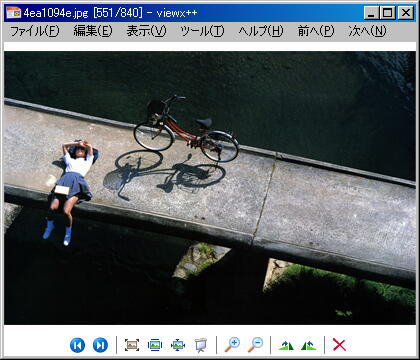
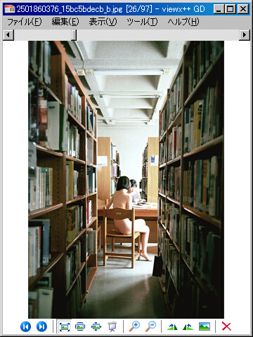

This soft is image and comic viewer.
I were using 'Image and FAX Viewer' at Windowx XP, but Windows Vista's 'Photo Gallery' has not keyboard operation.
So I make myself with anger.
Image processing engin is GdViewePro.
Windows 用の画像ビューアです。
XPでは「画像とFAXビューア」を使っていたのですが、Vistaにしたところ「フォトギャラリー」がキーボードで操作できないので、
むかついて作りました。を C++Builder XE6 で書き直したものです。
画像表示エンジンに GdViewePro を使っています。
 
2015/10/09 ver. 2015.10.09.0
from Github. v2iewx.2015.10.09.0
Windows 98 later 32bit & 64bit
| Animated GIF | Graphics Interchange Format |
| BMP | Standard Windows Bitmap Format |
| CUR | Microsoft Windows Cursor |
| CUT | Dr. Halo/Dr.Genius Clipboard Format |
| DDS | Microsoft DirectDraw Surface Format |
| DIB | Standard Windows Bitmap Format |
| EMF | Enhanced Windows Metaformat |
| EXIF | Exchangeable Image Format |
| EXR | OpenEXR Format |
| FAX, G3 | Group 3 Raw Fax Format |
| GIF, Interlaced GIF | Graphics Interchange Format |
| HDR | High Dynamic Range Format |
| ICO | Icone Format |
| IFF | Interchange Format |
| J2K, J2C | JPEG-2000 Codestream |
| JBG, JBIG | Joint Bi-level Image Experts Group |
| JIF, JFIF | JPEG File Interchange Format |
| JNG | JPEG Network Graphics |
| JP2 | JPEG-2000 Format |
| JPEG, JPG, JPE | Joint Photographic Expert Group |
| KOA | KOALA Format |
| LBM | Interchange File Format-Interleaved Bitmap |
| MNG | Multiple-image Network Graphics * |
| PBM | Portable Bitmap File |
| PBM RAW | Portable Bitmap BINARY |
| PCD | Kodak Photo-CD file |
| PCT, PICT, PIC | Macintosh PICT Format |
| PCX | PC Paintbrush Format |
| Portable Document Format | |
| PDF Multi-page | Portable Document Format |
| PDF/A | Document Format for long term preservation |
| PFM | Portable Float Map |
| PGM | Portable Graymap File |
| PGM RAW | Portable Graymap BINARY |
| PNG | Portable Network Graphics Format |
| PNM | Portable Any Map |
| PPM | Portable Pixmap File |
| PPM RAW | Portable Pixmap BINARY |
| PSD | Photoshop File |
| RAS | Sun Raster Format |
| RAW camera image | 下記リスト参照 |
| RAW memory bits | RAW bitmap |
| RLE | Standard Windows Bitmap format |
| SGI | Silicon Graphics Image Format |
| TGA, TARGA | TARGA Image Format |
| TIFF Multi-page | Multi-page Tagged Image Format |
| TIFF, TIF | Tagged Image Format |
| WBMP, WAP, WBM | Wireless Bitmap |
| WMF | Standard Windows Metaformat |
| XBM | X-Bitmap Format |
| XPM | X Pixmap Format |
| * | Susie Plug-in |
| bay | Casio Digital Camera Raw File Format. |
| bmq | NuCore Raw Image File. |
| cr2 | Canon Digital Camera RAW Image Format version 2.0. These images are based on the TIFF image standard. |
| crw | Canon Digital Camera RAW Image Format version 1.0. |
| cs1 | Capture Shop Raw Image File. |
| dc2 | Kodak DC25 Digital Camera File. |
| dcr | Kodak Digital Camera Raw Image Format for these models: Kodak DSC Pro SLR/c, Kodak DSC Pro SLR/n, Kodak DSC Pro 14N, Kodak DSC PRO 14nx. |
| dng | Adobe Digital Negative: DNG is a publicly-available, archival format for the raw files generated by digital cameras. By addressing the lack of an open standard for the raw files created by individual camera models, DNG helps ensure that photographers will be able to access their files in the future. |
| erf | Epson Digital Camera Raw Image Format. |
| fff | Imacon Digital Camera Raw Image Format. |
| hdr | Leaf Raw Image File. |
| k25 | Kodak DC25 Digital Camera Raw Image Format. |
| kdc | Kodak Digital Camera Raw Image Format. |
| mdc | Minolta RD175 Digital Camera Raw Image Format. |
| mos | Mamiya Digital Camera Raw Image Format. |
| mrw | Minolta Dimage Digital Camera Raw Image Format. |
| nef | Nikon Digital Camera Raw Image Format. |
| orf | Olympus Digital Camera Raw Image Format. |
| pef | Pentax Digital Camera Raw Image Format. |
| pxn | Logitech Digital Camera Raw Image Format. |
| raf | Fuji Digital Camera Raw Image Format. |
| raw | Panasonic Digital Camera Image Format. |
| rdc | Digital Foto Maker Raw Image File. |
| sr2 | Sony Digital Camera Raw Image Format. |
| srf | Sony Digital Camera Raw Image Format for DSC-F828 8 megapixel digital camera or Sony DSC-R1 |
| arw | Sony Digital Camera Raw Image Format for Alpha devices. |
| 3fr | Hasselblad Digital Camera Raw Image Format. |
| cine | Phantom Software Raw Image File. |
| ia | Sinar Raw Image File. |
| kc2 | Kodak DCS200 Digital Camera Raw Image Format. |
| mef | Mamiya Digital Camera Raw Image Format. |
| nrw | Nikon Digital Camera Raw Image Format. |
| qtk | Apple Quicktake 100/150 Digital Camera Raw Image Format. |
| rw2 | Panasonic LX3 Digital Camera Raw Image Format. |
| sti | Sinar Capture Shop Raw Image File. |
| drf | Kodak Digital Camera Raw Image Format. |
| dsc | Kodak Digital Camera Raw Image Format. |
| ptx | Pentax Digital Camera Raw Image Format. |
| cap | Phase One Digital Camera Raw Image Format. |
| iiq | Phase One Digital Camera Raw Image Format. |
| rwz | Rawzor Digital Camera Raw Image Format. |
In first, install GdPicturePro ActiveX plug-in (include this repogitry gdviewerpro.zip).
Next, put v2iewx.exe is anywhere you want to put, for example %USERPROFILE%\AppData\Local\DarkEra_Softwere\v2iewx\v2iewx.exe.
note. make ini file same excute file. so make sure writable user permittion.
まず、 GdPicturePro ActiveX plug-in をインストールしてください（同梱の gdviewerpro.zip です）。
次に v2iewx.exe を適当なフォルダに置いてください。例えば %USERPROFILE%\AppData\Local\DarkEra_Softwere\v2iewx\v2iewx.exe とかです。
注意：実行ファイルと同じ場所に設定ファイルを作成するので、書き込み権限があるか確認してください。
Uninstall GdPicturePro ActiveX plug-in, and delete the folder you installed.
GdPicturePro ActiveX plug-in をアンインストールして、インストールしたフォルダを削除してください。
Associate image file to v2iewx.exe.
You can drag and drop files amd folders.
[mouse-while] is prev and next image file.
[mouse-rightbutton]-[mouse-while} is zoom in/out.
[mouse-rightbutton-dbbuleclicick] is restore zoom.
画像ファイルをドロップするか関連付けしてください。 フォルダをドロップすることもできます。 初期設定ではキー操作は何も設定されていません。 [マウスホイールの手前]で次へ、 [マウスホイールの奥]で前へ進めます。 原寸大で表示してるときは、左クリックで画像を掴み、ぐりぐりできます。 右ボタンをクリックしながらホイールで拡大縮小です。 画像のダブルクリックで、ウィンドウに合わせると原寸大を切り替えられます。 ウィンドウに収めるになってるときは何もおこりません。
[ツール]-[オプション]で開く設定画面で[Susie Plug-in を使用する]にチェックを入れ、
その下のテキストボックスにプラグインがあるパスを指定してください。起動時に *.spi ファイルを読み込みます。
また、プラグインの読み込みに若干時間がかかる（と思う。コンマ何秒）ので、
プラグインを使わない場合はチェックを外しておきましょう。
Github
leiqunni@yahoo.co.jp
Twitter@leiqunni
AeroVista icon is Mayosoft from mexixico thx a lot! 多謝
http://www.mayosoft.net